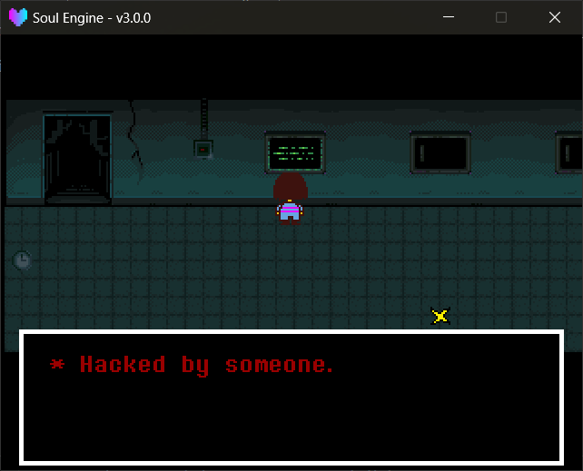

交互与对话
玩家碰到某个东西之后要发生什么，全部由你的场景脚本决定。引擎只负责告诉你"碰到了、碰的是谁"。
交互是怎么来的¶
物理世界的碰撞回调会把接触到的对象记进 World.interactions ：
interactions 字段
can_interact此刻是否正碰着某个可交互物。current_object碰到的类型（"warp"/"chest"/"sign"/"save"/"trigger"）。current_id碰到的对象的id。current_obj碰到的运行时对象本身，可以读它的properties。touching当前碰着的所有对象的列表（可能不止一个）。
不需要面朝它
判定只看碰撞，不要求玩家面向那个方向。原版那套"要走到牌子前面"的限制在这里没有实现，碰到就算。
读取交互¶
读取方法
Overworld.getInteractResult(obj_type, id, extra_key)是否正碰着符合条件的东西。obj_type类型名，例如"warp"。id省略时只要类型对就返回true。extra_key省略（或传数字）时按id匹配；传字符串时按该名字的自定义属性匹配（例如"rr"）。- 按属性匹配时返回的是那个属性的值（不是
true）——rr是3就返回3，直接就能拿来当编号用。
Overworld.getTouchResult(obj_type, id, extra_key)同上，但检查touching里的每一个对象而不是只查最后碰到的那个。Overworld.FindObject(obj_type, id, extra_key)不要求碰到，直接在整个地图上找，返回运行时对象表。obj_type写单数（"warp"/"mark"/"chest"），内部会拼成objects["warps"]去查。
getTouchResult 不受两个常见保护
getInteractResult 和 onConfirm 都有两道闸：对话刚结束的那一帧直接返回 false ， Char.controlling 为 false 时直接返回 nil 。
getTouchResult 两道都没有。 它只读 touching 列表，所以：
- 玩家被锁着（对话中 / 菜单里）时它照样返回
true； - 用
getTouchResult做触发时，容易出现"关掉对话的那一次确认键又把对话打开"。要自己加FLAG之类的去重。
旧脚本的第四个参数会被忽略
getInteractResult 的老签名有一个第 4 参数（当年是"必须面朝"的开关）。
现在接收但直接忽略，只是为了让老场景脚本还能跑。面向判定本身已经没有了（见上一条），新代码别写它。
重叠时用 getTouchResult
getInteractResult 只看"最后碰到的那一个"。两个触发区叠在一起时，先碰到的会被后碰到的顶掉。
只要有一个命中就算数的场合（比如"进入某个房间"），请一律用 getTouchResult 。
-- 碰到了 id 为 1 的 warp
if (Overworld.getInteractResult("warp", 1)) then ... end
-- 碰到了 rr 这个自定义属性等于 1 的 trigger
if (Overworld.getInteractResult("trigger", 1, "rr")) then ... end
-- 只要碰到任意告示牌
if (Overworld.getInteractResult("sign")) then ... end
一键确认¶
onConfirm 把"碰着 + 按了确认"合并成一次调用，是最常用的写法：
确认方法
Overworld.onConfirm(type_name, id, sub_key, func)条件满足且按下确认键时执行func。sub_key可省略；传了就额外按该自定义属性匹配一次。- 省略
sub_key时第三个参数直接就是回调函数。
Overworld.onConfirm("sign", 1, function ()
Overworld.dialogNew({"* 这是一块告示牌。"})
end)
Overworld.onConfirm("trigger", 1, "rr", function ()
Overworld.ChangeScene("Overworld.scene_ruins", 2, "down")
end)
对话¶
对话方法
Overworld.dialogNew(texts, position)弹一个对话框，返回dialog对象。texts文本数组。position"down"（屏幕下方，默认）或"up"（上方）。
Overworld.ui_prefer不传position时用这个默认值。
返回的 dialog 有两个字段： block （那个白边黑底的框）与 text （打字机对象）。
引擎默认在文本播完后销毁框并解锁玩家。想接着干点什么，覆盖 text._onComplete 即可：
local dialog = Overworld.dialogNew({"* 你捡起了一块石头。"})
dialog.text._onComplete = function ()
dialog.block:Destroy()
Char.controlling = true
-- 你自己的后续逻辑
end

切换场景¶
切场景方法
Overworld.ChangeScene(scene, mark, direction)淡出并切换到另一个场景。scene目标场景名，例如"Overworld.scene_ruins"。mark落到目标地图的第几个出生点，默认1。direction落地后的朝向，默认"down"。
它会立刻锁住玩家、开始淡出，等到黑幕全黑时才真正切场景。同时把 DATA.room / marker / direction 写进存档。
跨地图传数据用 DATA
切场景时 DATA 是全局的、不会丢，需要带过去的状态（剧情进度、掉落物之类）直接往 DATA 或 FLAG 里写。
一份完整的场景脚本¶
把上面的零件拼起来：
local scene = {}
local ow = ImportFile("Overworld")
ow.Init("Maps/main_scene/sol.lua")
ow.SetMusic("Start.ogg")
function scene.update(dt)
ow.Update(dt)
-- 告示牌
ow.onConfirm("sign", 1, function ()
ow.dialogNew({"* 欢迎来到遗迹。", "* 请小心脚下。"})
end)
-- 存档点
ow.onConfirm("save", 1, function ()
local save = ow.FindObject("save", 1)
ow.SaveInteract({"* 你感到了希望。"}, "遗迹 - 入口", save.position, "down")
end)
-- 箱子
ow.onConfirm("chest", 1, function ()
ow.ChestInteract("chest")
end)
-- 传送
ow.onConfirm("warp", 1, function ()
ow.ChangeScene("Overworld.scene_ruins", 2, "down")
end)
-- 自定义触发区：走进去就说一句话（只说一次）
if (ow.getTouchResult("trigger", 1, "rr") and not FLAG["said_hello"]) then
FLAG["said_hello"] = true
ow.dialogNew({"* ……这里好安静。"})
end
end
function scene.draw()
ow.Draw()
end
function scene.clear()
ow.Clear()
Layers.clear()
end
return scene
常见坑¶
对话刚结束的那一帧，getInteractResult 一律返回 false
引擎有一个单帧锁：文本播完的那一帧，所有 getInteractResult 调用都会返回 false （ getTouchResult 不受影响）。
这是为了防住"关掉对话的那一次确认键又立刻把对话打开一遍"的死循环。
如果你在这一帧里想连续触发两件事，第二件会被吞掉——把它挪到下一帧，或者自己写状态机。
Char.controlling 为 false 时 getInteractResult 不生效
getInteractResult 里有 if (not Char.controlling) then return end （注意返回的是 nil ，不是 false ）。
自己锁了玩家却忘了恢复，走 getInteractResult / onConfirm 的交互会静默失效。
但 getTouchResult 和 FindObject 不看这个字段，它们永远照常工作。
对话框要跟着镜头
自己做 UI 时用 GetRelativePos(x, y) 换算坐标，别直接写屏幕坐标——镜头是会动的。